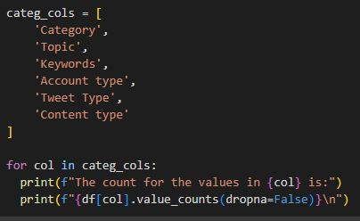
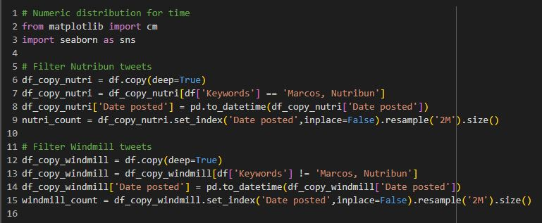
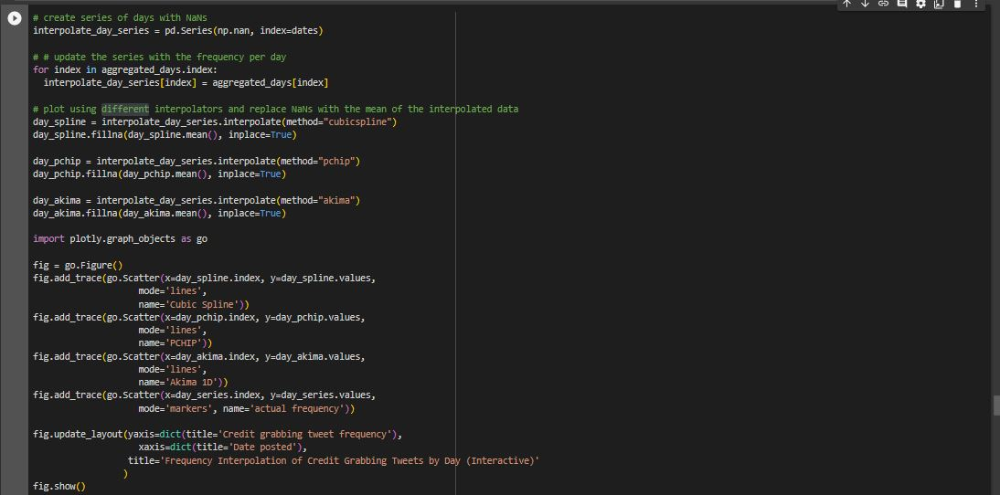

Data Exploration
This section describes the preprocessing methods performed on the data set. The cleaned data is used as input to create different graphs in order to identify trends or relationships in the data. Implementations of these graphs are also discussed in this section
Preprocessing
Time Series Analysis
To prepare the data for the time series analysis, the dates from the original spreadsheet were extracted through the code below. Observe that two datasets were derived from the original dataset: data with only the month and year and data with the entire date. Do also note that data with null values were dropped.
To add for the preparation, we made two separate DataFrames for each type of topic.
The types of topics came from executing the code below in the exploration stage, where categorical columns are inspected.

Looking at the output, the keywords for the topics are used for the sorting of data on the later stages.
Continuing with the preprocessing, the engagement type columns are listed and used to get the count of average engagement of each topic. This is used in a later plot regarding tweet engagement.
Two dataframes are again created to separate the topics, but in addition, the count of tweets of each timeframe is also applied. Shown below is the code, which also shows the storing of the data sizes.

Afterwards, the difference of the distribution of each dates is taken into consideration using the code below. This combines the data from the different type of topics to form the plot uniting them. This will be useful for a graph shown later.
Visualization
Time Series by Topic
The code below shows the plotting of the graph showing the distribution of the credit-grabbing tweets over the given timeframe. Note that the graph in the following images shows a 2-month gap. This is made to make the graph more compact and show the information more clearly.
Below is the output of the code. Observe that most of the windmill-related tweets appear from around October 2021 to October 2022 while the Nutribun-related tweets are more flat and boomed around June 2022 to October 2022. It also shows
Time Series by Average Engagement
The code below uses the preprocessed engagement data to plot the average engagement count of the tweets of each topic (Nutribun and Windmill).
Shown below is the output of the above code. It shows the average amount of engagement each tweet (by topic) gets. As we can see, an average windmill tweet gets more attention/engagement than an average nutribun tweet.
Time Series by Month
The code below shows how the time series graph which was divided by months was constructed. Frequency of the tweets was counted by month using the value_counts function call. The bins were then sorted in chronological order. Note that some data were dropped because these data were past the 1 year range i.e., belonging in the October 2022 bin.
Executing the code will yield to the graph below. Observe that most of the credit-grabbing tweets were posted during October 2021, January to May 2022 and September 2022. This may have been caused by Bongbong Marcos's filing of candicacy on October 6, 2021, the campaign period from February 8 to May 7, 2022, and Bongbong's attendance to the United Nations General Assembly in September.
Finally, below is the code executed to interpolate the data in the objective of filling the missing points provided that only the total frequency per month was utilized in the time series graph. As evident in the code, 365 points were now used to span the entire year. Three interpolation techniques were applied namely, Cubic Spline, Piecewise Cubic Hermite Interpolating Polynomial (PCHIP), and Akima 1D.
Below is the resulting interactive graph upon executing the interpolation code. Clicking on the lines in the legend will hide the other lines plotted in the graph.
Time Series by Day
Provided that specific dates may have sparked the emergence of credit-grabbing tweets, a time series divided by days was also implemented. Recall from the preprocessing phase that data which contained the days of each tweet was also extracted. Using this data, the number of tweets per day were counted. Observe that a similar process was done wherein each day was designated as a bin and the frequency of tweets per day was extracted using the value_counts function. Note that some data were omitted because the said data do not belong to the 1 year range.
Executing above will result to the graph below. As expected and as observed from the monthly time series, the months of October 2021, January to May 2022, and September 2022 had the most number of credit-grabbing tweets with September 23, 2022, Jan 30, 2022, and October 20, 2021 with the most number of tweets.
Lastly, the code below is for the interpolation of the daily data. As observed from the previous graph, there were multiple days wherein no tweets were made on credit grabbing. This is alleviated by initially interpolating the daily data using different interpolators: Cubic Spline, PCHIP, and Akima 1D. If there were still existing dates without any tweets made, these dates were imputed with the mean number of tweets after the interpolation process. It is recommended to explore resampling (upsampling from the monthly data) in the future.

The interactive graph resulting from the interpolation of the daily data is presented below. Clicking on the symbols in the legend will hide the other plots in the graph.